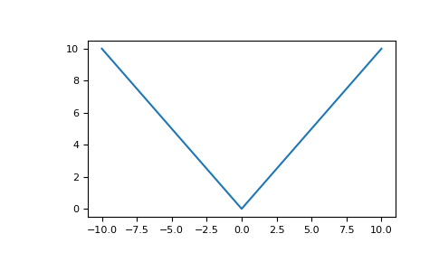

numpy.absolute¶
-
numpy.absolute(x, /, out=None, *, where=True, casting='same_kind', order='K', dtype=None, subok=True[, signature, extobj]) = <ufunc 'absolute'>¶ Calculate the absolute value element-wise.
Parameters: x : array_like
Input array.
out : ndarray, None, or tuple of ndarray and None, optional
A location into which the result is stored. If provided, it must have a shape that the inputs broadcast to. If not provided or None, a freshly-allocated array is returned. A tuple (possible only as a keyword argument) must have length equal to the number of outputs.
where : array_like, optional
Values of True indicate to calculate the ufunc at that position, values of False indicate to leave the value in the output alone.
**kwargs
For other keyword-only arguments, see the ufunc docs.
Returns: absolute : ndarray
An ndarray containing the absolute value of each element in x. For complex input,
a + ib, the absolute value is .Examples
>>> x = np.array([-1.2, 1.2]) >>> np.absolute(x) array([ 1.2, 1.2]) >>> np.absolute(1.2 + 1j) 1.5620499351813308
Plot the function over
[-10, 10]:>>> import matplotlib.pyplot as plt
>>> x = np.linspace(start=-10, stop=10, num=101) >>> plt.plot(x, np.absolute(x)) >>> plt.show()
Plot the function over the complex plane:
>>> xx = x + 1j * x[:, np.newaxis] >>> plt.imshow(np.abs(xx), extent=[-10, 10, -10, 10], cmap='gray') >>> plt.show()